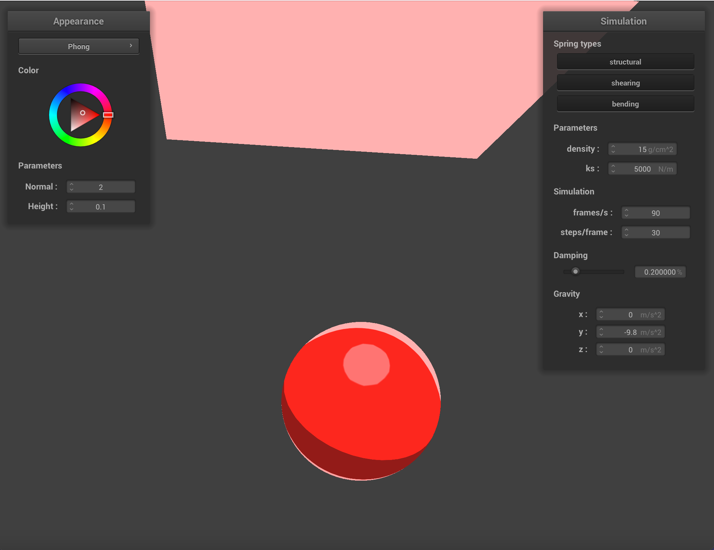
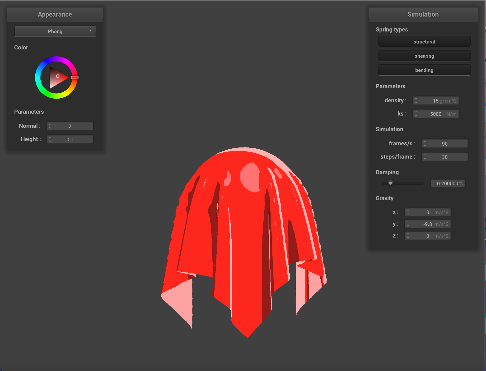
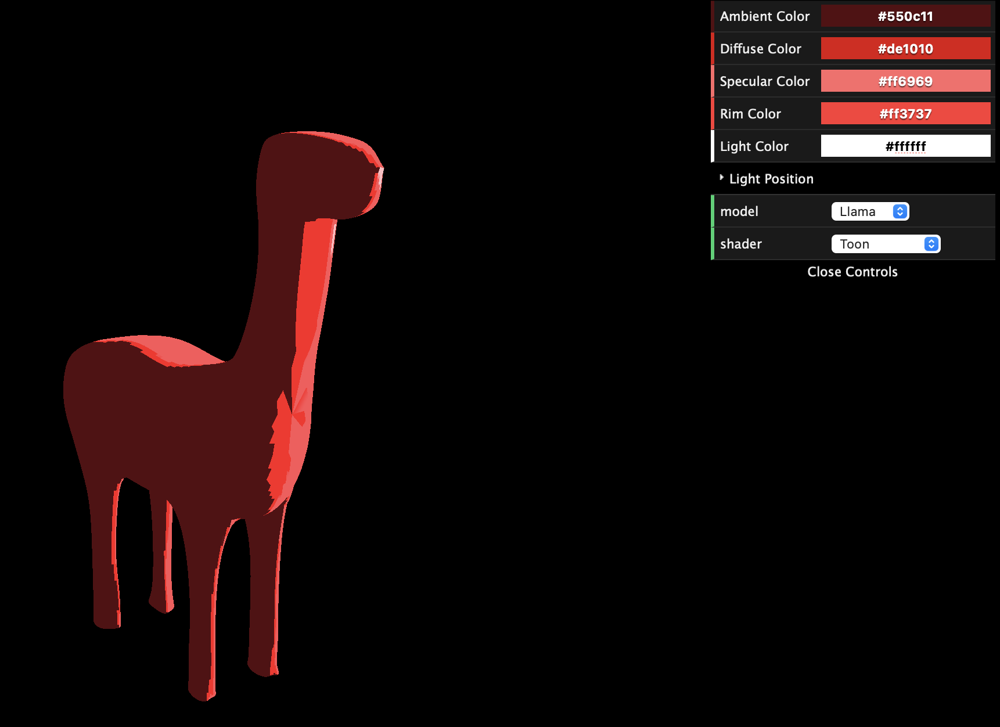
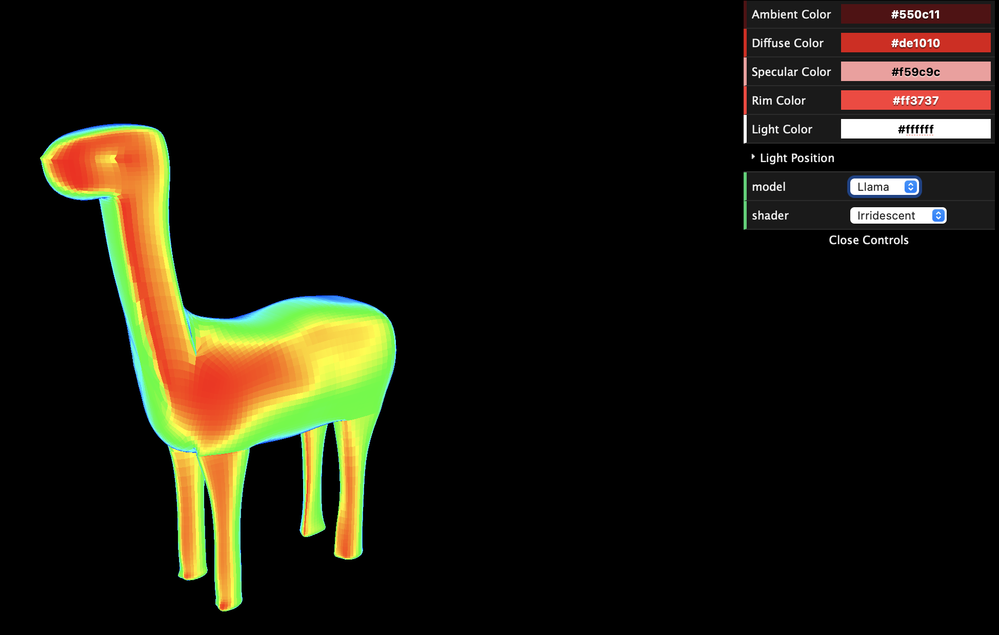

|  |  |
So far, we have implemented basic toon shading that accounts for a rim light, specularity, and shadow that adjust depending on the camera view of the object. We modified our Project 4 Blinn-Phong shader code to include ambient, diffuse, specular, and rim light, which modify the original Blinn-Phong gradient shadow to a now discrete shadow. This emulates the look of cartoon-like styles since we can see sharp contrasts in color based on how light is hitting the object.
Additionally, we implemented a browser website where we imported custom models (such as the fabulous llama shown below) to test our custom shaders. Because edge-detection and outlining is taking longer than expected, we updated our plan a bit to explore more textures and shaders. For example, we are currently interesting in exploring the iridescent texture from our proposal, and began with implementing a basic thermal shader. We wish to build off of the thermal shader to eventually produce an iridescent shader. Additionally, modified our GUI to allow the user to modify the colors of the diffuse, ambient, specular and rim color, and choose the type of model (sphere, cube, llama) they wish to use in the browser.
|  |  |
Initially, we intended to modify our cel shader to include edge-detection that would outline our models. However, we ran into some trouble implementing this aspect of the project. While reaserching, we found that line thickness and line weight can be implemented using stencil buffers or depth detection using multi-pass rendering. However, we did not realize how difficult it would be to implement this feature, and thus, we needed to modify our timeline to properly account for this part of the project.
Otherwise, we are generally on schedule, and have successfully created the 2D toon-shader as proposed. Going forward, we are going to explore and incorporate additional 2D style textues (i.e. iridescent, watercolor, hatching, thermal etc.), which was initially only going to be implemented if we had time.
Rest of Week 3 (4/25):
Part 4: -Continue with different methods of implementing outlines/line art styles
-Further polish the thermal shader
-Modify thermal shader to implement iridescent texture
Week 4 (5/1):
Part 5: -Continue to work on outlining/line weights
-Finalize the outline/line art shader
-Try a basic hatching/watercolor shader implemented with paper texturing
Week 5 (5/8):
-Finalize the renders and videos demonstrating the project
-Complete the final project video and report webpage
-Tues 5/10 Final Deliverables due
We used the tutorial linked below as inspiration for the llama's "watercolor" mixing texture!
Important concepts behind toon shading